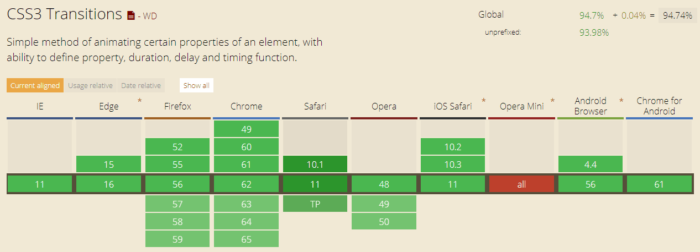
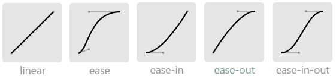

前言
之前逛了一下小米官网，发现里面有一些非常有意思的动画，并且这些动画给我的感觉非常有动感美。特意看了下官网代码，发现使用的是transition: transform 1s cubic-bezier(0.15, 0.73, 0.37, 1.2);,贝塞尔曲线的使用使得这些动画更加柔和自然了。说起来自己对于transition的使用都有些陌生了，现在重新学习并记录下。
transition是一个简写属性
transition是一个简写属性，用于设置四个过渡属性
（1）transition-property：设置要过渡的属性；
（2）transition-duration：设置完成过渡需要的时间，单位为”s”或”ms”；
（3）transition-timing-function：设置速度曲线；
（4）transition-delay：设置在过渡效果开始之前需要等待的时间，单位为”s”或”ms”。
transition属性的兼容性，如图所示：

虽然说现在最新版的浏览器基本都支持css3，不用写前缀了，但为了兼容老版本浏览器还是得写前缀。
1 | -webkit-transition: prop time; /*chrome、safari等私有属性*/ |
transition-property
取值：
| 值 | 描述 |
|---|---|
| none | 没有属性会获得过渡效果。 |
| all | 所有属性都将获得过渡效果。 |
| property | 定义应用过渡效果的 CSS 属性名称列表，列表以逗号分隔。 |
transition-duration
取值：
| 值 | 描述 |
|---|---|
| time | 设置完成过渡需要的时间，单位为”s”或”ms”；。默认值是 0，表示立即发生过渡。 |
transition-timing-function
取值：
| 值 | 描述 |
|---|---|
| linear | 规定以相同速度开始至结束的过渡效果（等于 cubic-bezier(0,0,1,1)）。 |
| ease | 规定慢速开始，然后变快，然后慢速结束的过渡效果（cubic-bezier(0.25,0.1,0.25,1)）。 |
| ease-in | 规定以慢速开始的过渡效果（等于 cubic-bezier(0.42,0,1,1)）。 |
| ease-out | 规定以慢速结束的过渡效果（等于 cubic-bezier(0,0,0.58,1)）。 |
| ease-in-out | 规定以慢速开始和结束的过渡效果（等于 cubic-bezier(0.42,0,0.58,1)）。 |
| cubic-bezier(n,n,n,n) | 在 cubic-bezier 函数中定义自己的值。可能的值是 0 至 1 之间的数值。 |
它们所对应的贝塞尔曲塞如图所示：

至于什么是贝塞尔曲线，有兴趣的可以去研究研究。
如果要凭空写出贝赛尔函数的代码，可能比较困难。好在不用你自己去计算，可以到工具网站：贝赛尔立方上自动生成想要效果的代码。
transition-delay
取值：
| 值 | 描述 |
|---|---|
| time | 设置在过渡效果开始之前需要等待的时间，单位为”s”或”ms”。 |